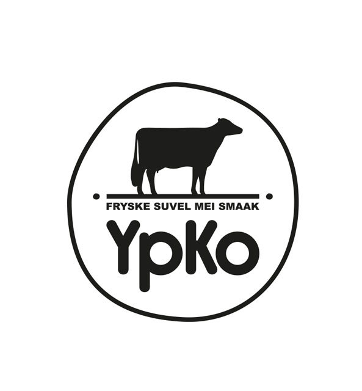
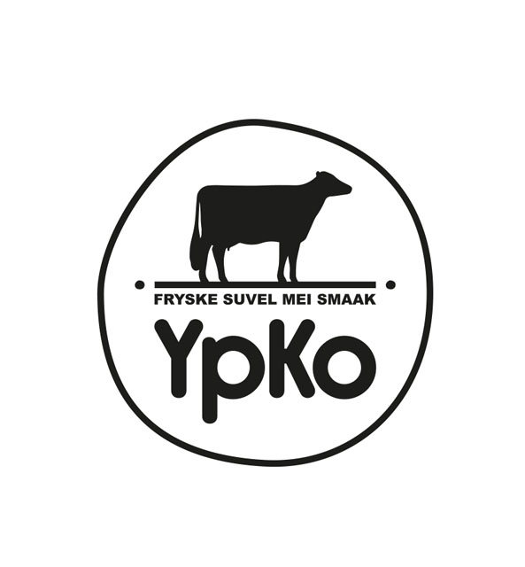

Premium Performance Food
De Zachte
De Zachte
Revolutie.
Functioneel schapenmelk ijs uit Friesland.
Lacaune schapenmelk staat bekend om de superieure opneembaarheid. Onze formule is verrijkt met essentiële elementen voor fysiek herstel en mentale scherpte.


 
